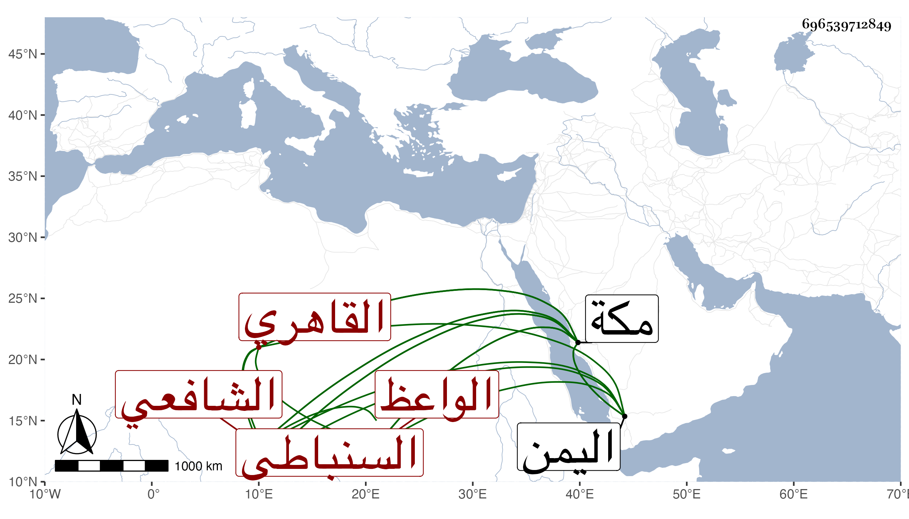

0902Sakhawi.DawLamic.ITO20230111-ara1.EIS1600.696539712849
Biography ID: 696539712849
50
عبد الله بن أبي بكر بن حسن أو حسين الجمال السنباطي ثم القاهري الشافعي الواعظ . ولد في ربيع الآخر سنة اثنتين و ستين وسبعمائة وحفظ القرآن والشاطبية والرائية وألفية ابن مالك وغيرها ، وعرض في سنة خمس وسبعين على ابن الملقن والشمس محمد بن الصايغ والكمال الدميري وغيرهم وأجازوا له ، ولازم البلقيني في الفقه وغيره وسمع عليه البخاري بل كان هو قارئ الميعاد عنده من كلامه وكلام غيره ثم عند ولديه من بعده ، وناب في القضاء عن الجلال فمن بعده وتقدم في الفقه والوعظ وتكلم على الناس بالجامع من نحو سبعين سنة إلى أن اشتهر ذكره وحظي فيه إلى الغاية وكذا وعظ بمكة حين جاور بها وراج أمره هناك أيضا حتى أن الشاب التائب الواعظ فارق مكة وبرز إلى جهة اليمن ، وقد حدث باليسير وكان على وعظه أنس ولكلامه وقع في النفوس . أثنى عليه شيخنا في تاريخه وذكره العيني باختصار ، تمرض مدة قيل أنها أكثر من سنة ومات بعد أن أعرض عن القضاء من مديدة في آخر رمضان سنة ست وأربعين رحمه الله وإيانا .
